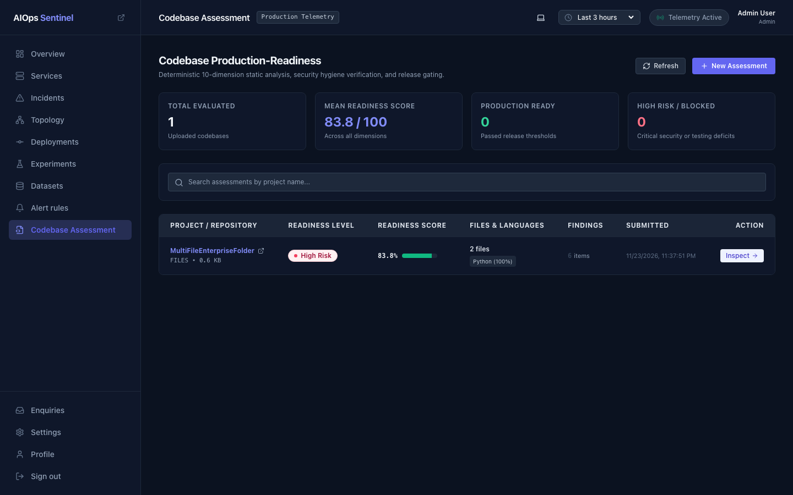

Platform Feature Specification
Comprehensive capabilities spanning pre-deployment static analysis and live cluster telemetry intelligence.

1. Pre-Deployment Codebase Readiness
10-Dimension Static Analysis
Evaluates architecture structure, error handling, telemetry instrumentation, security credentials, dependency posture, test coverage, and configuration discipline.
SARIF & HTML Export
Export standard SARIF 2.1.0 reports natively ingested by GitHub Code Scanning, SonarQube, and CI/CD security dashboards.
Safe Static Sandboxing
Zero arbitrary code execution. Source code is parsed strictly into Python ASTs and inspected via static regular expressions and heuristics.
2. Runtime Reliability & RCA
Non-Parametric Anomaly Detection
Robust to heavy-tailed cloud latency distributions using Median Absolute Deviation (MAD) and modified Z-scores without Gaussian assumptions.
Online EWMA Drift Detection
Continuously tracks metric drift and dynamic control limits in streaming telemetry without maintaining unbounded historical memory buffers.
Topological Causal RCA
Random Walk with Restart (RWR) traverses the microservice dependency graph backwards from symptom anomalies to identify probable root causes.
3. Enterprise Governance & Security
PostgreSQL Advisory Locking
Guarantees that concurrent operators or automated background workers cannot execute conflicting remediation actions simultaneously on the same incident.
Role-Based Access Control (RBAC)
JWT-authenticated sessions with granular role permissions: Admin, SRE, and Analyst tiers with secure password hashing via bcrypt.
Audit Logging & Ingestion Security
All remediation attempts, policy approvals, and user actions are logged with immutable audit records and IP attribution.